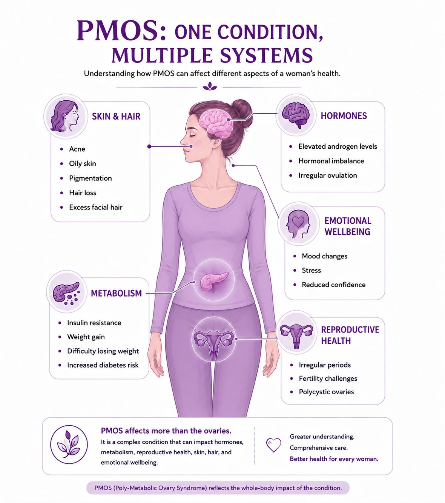
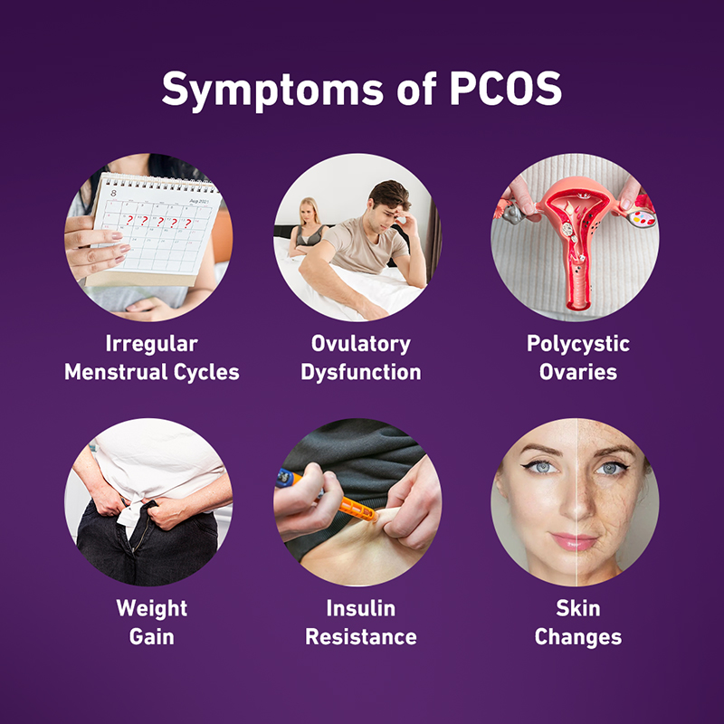
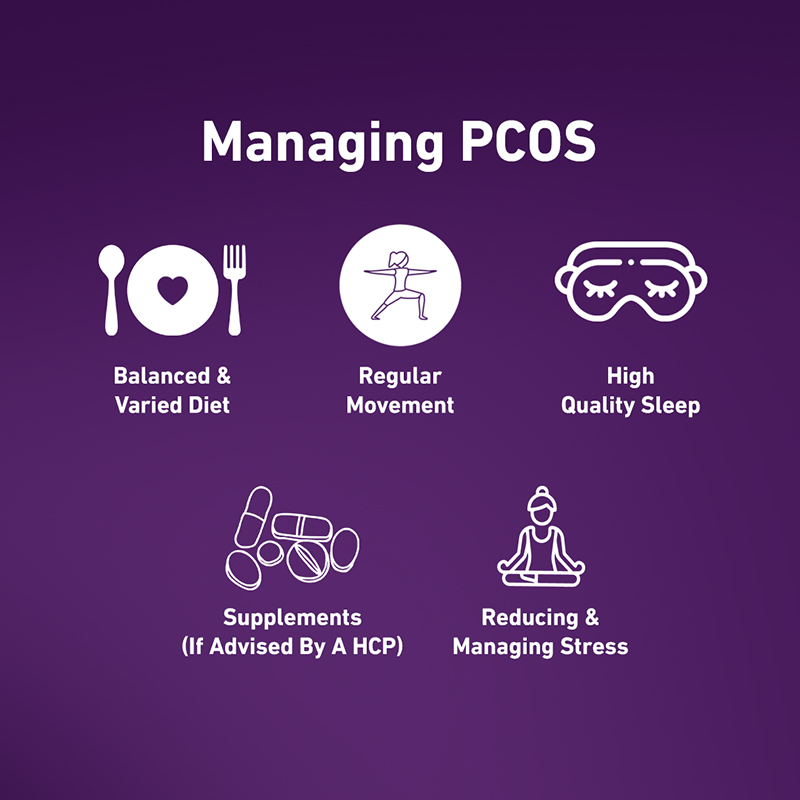
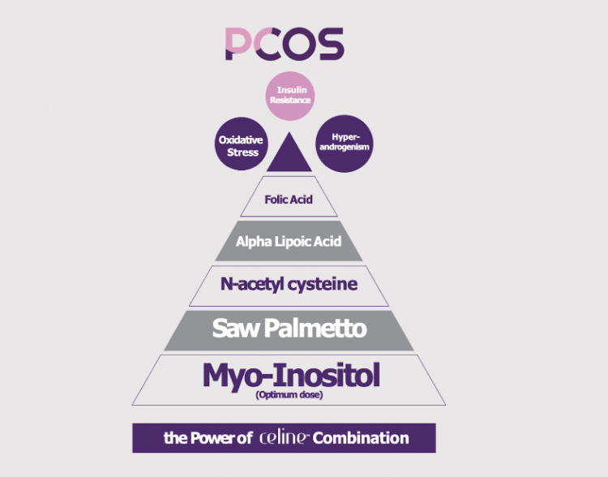

Although the exact cause of PCOS/PMOS is unknown, Several factors can increase the risk of developing Polycystic Ovary Syndrome (PCOS/PMOS).
What was once known as Polycystic Ovary Syndrome (PCOS) is now increasingly being recognized as a condition that affects multiple aspects of a woman's health—from hormones and metabolism to skin health, weight management, and fertility. PMOS (Polyendocrine Metabolic Ovarian Syndrome) reflects this broader understanding, helping women see the bigger picture, recognize symptoms earlier, and access more personalized care.
The condition hasn't changed. Our understanding has.
What is PCOS / PMOS?
PCOS, now increasingly referred to as PMOS, is a common hormonal and metabolic condition that affects multiple aspects of a woman's health.
It can influence hormone balance, metabolism and weight management, skin and hair health, reproductive health and fertility, and emotional wellbeing.
While the condition was traditionally viewed as an ovarian disorder, we now understand that its effects extend far beyond the ovaries. This broader understanding is why many experts are embracing the term PMOS, which better reflects the condition's impact on the whole body. The condition itself has not changed—only our understanding of it has evolved.

What Does This Mean for Me?
What has changed is our understanding. PMOS recognizes the broader effects of the condition and encourages a more comprehensive approach to care. Alongside appropriate care, healthy lifestyle changes can help women better manage PCOS/PMOS and improve their overall wellbeing.
A new name. A fuller picture. Better care for women.
Do I have PCOS/PMOS?
Although the exact cause of PCOS/PMOS is unknown, the syndrome is associated with a range of symptoms that can lead to various conditions and complications.

Symptoms and complications of PCOS/PMOS
Although the exact cause of PCOS/PMOS is unknown, the syndrome is associated with a range of symptoms that can lead to various conditions and complications.
Read More
Diagnosis of PCOS/PMOS
What are the signs that indicate you might have Polycystic Ovary Syndrome?
If you're experiencing any of the symptoms or complications associated with PCOS/PMOS,

How to Manage PCOS/PMOS?
Managing PCOS/PMOS often requires a combination of healthy lifestyle habits, medical guidance, and ongoing support. This may include a balanced diet, regular physical activity, and treatments to help manage hormone balance, menstrual health, insulin resistance, and other symptoms. Because PCOS/PMOS can affect multiple aspects of a woman's health, care may involve different healthcare professionals based on individual needs.
Read More
Choose celine
Additionally, a specially designed supplement Celine® is a new trend in managing polycystic ovarian syndrome (PCOS/PMOS) symptoms, featuring 5-in-1 supplement designed to address imbalances related to the condition.
Read More
FAQ
Who is at risk of developing PCOS/PMOS?
At what age range does PCOS/PMOS impact women?
PCOS/PMOS impacts 4-20% of women of reproductive age globally, with the condition likely starting during the fetal stage. Symptoms evolve as women with PCOS/PMOS age, with the earliest signs typically appearing around puberty.
Does PCOS/PMOS have a genetic component?
A family history of PCOS/PMOS can increase the likelihood of developing the condition. If close relatives, like your mother, have PCOS/PMOS, your risk may be higher. This indicates a possible genetic link to PCOS/PMOS, though specific genes have yet to be identified.
Do lifestyle factors have an influence?
Poor eating habits, being overweight or obese, and leading an inactive lifestyle can contribute to the development of PCOS/PMOS due to the hormonal imbalance associated with insulin resistance.
What pre-existing medical conditions may increase the likelihood of developing PCOS/PMOS?
Individuals with insulin resistance, such as those with prediabetes or metabolic syndrome, and women with hormonal imbalances, particularly elevated levels of androgens (male hormones), are more prone to developing PCOS/PMOS.